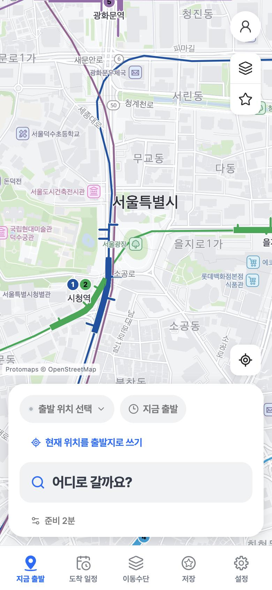

버스만 타면
15분 늦습니다.
집 앞 정류장에서 7분을 기다리고, 한 번에 가는 버스로 38분.
도착 시간부터 생각하는 길찾기
도착해야 하는 시각만 알려 주세요. 걷기, 따릉이, 킥보드, 버스, 지하철, 택시를 이어 붙여 가장 먼저 도착하는 길 하나를 바로 보여 줍니다.

찾는 방식
집 앞 정류장에서 7분을 기다리고, 한 번에 가는 버스로 38분.
열차는 빠르지만, 역까지 걷는 9분이 발목을 잡습니다.
역까지는 따릉이, 내려서는 킥보드. 지각지도는 이런 조합을 스스로 찾아서 이 길 하나만 보여 줍니다.
버스만
지하철만
지각지도
여러 후보를 비교하는 일은 앱이 합니다. 가장 먼저 도착하는 길을 골라 맨 위에 둡니다. 받아 든 사람은 출발만 하면 됩니다.
정류장 대기, 환승 걷기, 대여와 반납, 주차한 뒤 걷는 길까지 모두 도착 시각에 넣습니다. 지도 위 이동시간만 더하지 않습니다.
뛰어도 같은 열차를 탄다면 달리기를 권하지 않습니다. 놓칠 차를 잡을 수 있을 때만 달리는 구간을 넣습니다.
이동수단
수단마다 따로 검색하지 않습니다. 구간마다 가장 빠른 것을 골라 하나의 길로 잇습니다.
모든 연결의 처음과 끝. 실제 보행 경로와 횡단보도로 계산합니다.
뛰어서 앞 차를 탈 수 있을 때만 넣습니다. 길이는 설정한 한도 안에서.
대여소의 남은 자전거를 확인하고, 대여와 반납 시간까지 더합니다.
반납할 수 있는 곳에서 끝나는 길만 씁니다. 언덕길에서 특히 빨라집니다.
역에서 내려 목적지까지 남은 마지막 구간을 줄입니다.
정류장 도착 정보로 지금 걸어가서 실제로 탈 수 있는 차를 고릅니다.
열차 도착과 환승 통로 걷기를 함께 계산해 갈아탈 역을 정합니다.
남은 구간을 택시로 이었을 때 정말 빨라지는지 비교합니다.
저장한 차 위치에서 출발해 공영주차장에 세우고, 목적지까지 걷는 길로 잇습니다.
실시간
오래된 정보는 그대로 믿지 않습니다. 언제 받은 값인지, 어느 방향인지 확인하고, 확인할 수 없으면 추정값으로 바꿔 계산합니다.
4호선 혜화역에서 타세요
사당 방면 · 2분 뒤 도착
이동 안내
도착 일정
08:19에 나가세요
약속 시각과 장소를 넣어 두면, 그날의 교통으로 나갈 때를 계산해 알려 줍니다.
준비 시간
신발 신는 2분
문을 나서기까지 걸리는 시간도 출발 시각에 넣습니다.
저장
자주 가는 곳은 한 번 눌러 바로 찾습니다.
더 정확해지는 도착 시간
동의한 이동만
배웁니다
선택해서 동의한 실제 이동 기록으로 예측 모델을 다시 학습하고, 검증을 통과한 모델만 도착 시간 계산에 씁니다.
iPhone과 Android 앱을 출시 준비하고 있습니다.